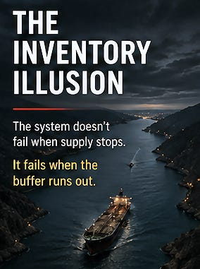
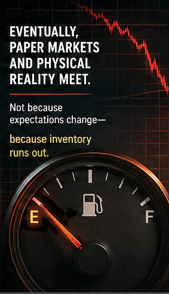
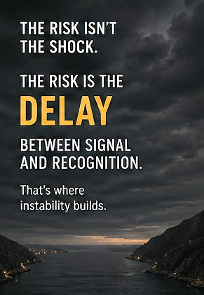

The system says shipments are disrupted, not broken. Markets say prices are rising, not repricing reality. Governments say demand should be reduced, not that the old supply assumption has failed. Analysts talk about buffers, reserves, and rerouting, as though inventories are resilience rather than a countdown.
The Strait of Hormuz is where that countdown is now visible.
The International Energy Agency describes Hormuz as one of the world’s most critical oil transit chokepoints, carrying about 20 million barrels per day of crude oil and oil products in 2025, around a quarter of global seaborne oil trade, with limited bypass options. ([IEA][1]) The U.S. Energy Information Administration similarly states that flows through the Strait averaged 20.9 million barrels per day in the first half of 2025, about 20% of global petroleum liquids consumption, and that alternatives can move only part of the volume if the Strait closes.
That is the structural fact. Not a headline. Not a forecast. A dependency.
On April 24, Reuters reported that only five ships passed through the Strait in a 24-hour period, compared with an average of roughly 140 daily passages before the Iran war began on February 28. ([Investing.com][2]) Gulf Times in Qatar carried the same Reuters report, while Dawn in Pakistan reported the five-ship figure and described specific vessel movements through the restricted passage. ([Gulf Times][3]) The Straits Times in Singapore also reported the collapse in daily transit volume and noted that the Comoros-flagged supertanker Helga reached Iraq’s Basra terminal as only the second vessel to reach Iraq since the closure. ([The Straits Times][4])
The important point is not that traffic fell. The important point is that the world can continue speaking normally after the flow has already broken.
That is what inventories do. They create a temporary permission structure for denial.
A refinery can keep running for some period after replacement cargoes stop moving. A government can release reserves.
A retailer can delay passing through costs.
A futures market can price reopening probability instead of physical absence.
A consumer can still fill a tank. For a while, the system behaves as though the dependency remains intact.
But the dependency is no longer intact. The remaining buffer is not proof of resilience. It is evidence that the break has not yet reached the surface.

The Paper Market Has a Language Problem
Paper markets are built to price probability. Physical systems eventually price availability.
That difference matters.
A futures market can believe in a ceasefire, a reopening, a convoy, a reroute, a demand response, or a government intervention. A physical cargo cannot believe in anything. It either clears the Strait or it does not.
Reuters reported on April 27 that an LNG tanker managed by ADNOC Logistics & Services appeared to cross Hormuz for the first time since the Iran war began, but the report was careful: ship-tracking data can be spoofed or erroneous, and one successful crossing does not establish reliable transit. ([Reuters][5]) Earlier Reuters-linked reporting said loaded Qatari LNG vessels had turned back after approaching Hormuz, while later tracking showed five Qatari LNG vessels approaching the Strait as a possible first loaded transit attempt after reopening signals. ([PGJ Online][6])
That is not recovery. That is uncertainty with moving objects.
The paper market can call that optionality. The physical system calls it interruption.
The contradiction edge is simple:
Official / market assumption:
Some combination of inventories, rerouting, demand reduction, and reopening will smooth the shock.
Observable condition:
A chokepoint that normally carries roughly one-fifth of global petroleum liquids sees daily passage collapse to single digits.
The gap between those two statements is the inventory illusion.
Asia Feels the Dependency First
The transcript’s strongest unsupported claims should not be used as fact. The country-by-country emergency list requires independent receipts. But the direction of exposure is real.
The EIA has long noted that Asian markets are major destinations for Hormuz crude flows, with Japan, India, South Korea, and China historically among the largest destinations. ([U.S. Energy Information Administration][7]) The Philippine Information Agency, citing the Department of Energy, warned in March that although the Philippines does not import crude directly from Iran, its dependence on Middle East supply and interconnected Asian refining makes it vulnerable to Hormuz disruption through higher oil prices, groceries, and transport fares. ([Philippine Information Agency][8])
India shows the same pressure in financial form. Reuters reported on April 27 that higher oil prices from restricted Hormuz shipments pressured the rupee, with likely Reserve Bank of India-linked dollar sales helping blunt the impact. The same report said Goldman Sachs lifted its three-month oil forecast and cut India’s 2026 growth outlook, citing household-income and industrial-cost pressure. ([Reuters][9]) Indian outlets also reported crude rising as US-Iran talks stalled and Hormuz disruptions tightened supply, while domestic diesel prices remained unchanged, implying policy buffering at the retail layer. ([The Times of India][10])
That is the pattern: physical disruption enters first through shipping, then currency, then import costs, then retail cushioning, then political language.
Every layer delays the next.
Demand Reduction as Respectable Triage
When supply breaks, institutions rarely say “the system is short.” They say demand must become more efficient.
That language is not false. Demand reduction can be rational. But it also has a political function: it converts scarcity into responsibility.
Ursula von der Leyen quote —“the least expensive energy is the energy that is not used”—should be treated as a signal, not as sufficient source authority for this article. The deeper point does not depend on that clip. Every energy crisis produces a moment when the management of shortage is reframed as moral or civic discipline.
Use less. Drive less. Heat less. Fish less. Fly less. Wait longer. Pay more quietly.
That is not simply policy. It is a language bridge between physical absence and social compliance.
The unaskable institutional question is:
Are we asking citizens to conserve because conservation is optimal, or because the physical system can no longer deliver what our public language still implies?
The answer may be both. But public institutions are structurally discouraged from saying the second half too early. Saying it risks hoarding, panic buying, market disorder, and political blame.
So the language of efficiency arrives before the language of failure.

Omission Is Not Proof. It Is Pressure.
No single missing document proves anything. A missing inventory schedule does not prove deception. A delayed fuel-price adjustment does not prove manipulation. A government reserve release does not prove panic.
But the pattern matters.
The source-bound omissions are clear enough:
Missing public artifact 1: country-by-country inventory burn-down schedules.
Missing public artifact 2: refinery-level exposure to delayed Gulf cargoes.
Missing public artifact 3: clear distinction between physical cargo pricing and futures-market expectation.
Missing public artifact 4: official threshold at which “temporary disruption” becomes “structural shortage.”
Each absence is individually defensible. Together, they form pressure around the same question: when does the system admit that inventory is no longer a buffer but a dwindling disguise?
The Moment Paper Meets Physical Absence
The most useful phrase is the mechanism: paper and physical prices must eventually converge.
That convergence does not require panic. It requires exhaustion of excuses.
First, the Strait closes or becomes unreliable.
Then ships stop moving.
Then inventories mask the break.
Then governments soften the language.
Then currencies and import bills adjust.
Then households and businesses feel what shipping data already knew.
By the time consumers experience the shortage, the physical system may have been speaking for weeks. That is the inventory illusion: the belief that because society has not yet felt the break, the break has not yet happened.
Hormuz shows the opposite.
The break can be real before it is public.
The shortage can be physical before it is political.
The market can remain fluent after the dependency has failed.
And when that fluency ends, it will not be because language changed reality.
It will be because physical absence finally made language irrelevant.
[1]: https://www.iea.org/about/oil-security-and-emergency-response/strait-of-hormuz?utm_source=chatgpt.com “Strait of Hormuz - About - IEA”
[2]: https://www.investing.com/news/commodities-news/only-five-ships-pass-through-strait-of-hormuz-in-24-hours-4635274?utm_source=chatgpt.com “Only five ships pass through Strait of Hormuz in 24 hours By Reuters”
[3]: https://www.gulf-times.com/article/724544/region/only-five-ships-pass-through-strait-of-hormuz-in-24-hours?utm_source=chatgpt.com “Only five ships pass through Strait of Hormuz in 24 hours - Gulf Times”
[4]: https://www.straitstimes.com/world/middle-east/only-five-ships-pass-through-strait-of-hormuz-in-24-hours/?utm_source=chatgpt.com “Only five ships pass through Strait of Hormuz in 24 hours | The Straits Times”
[5]: https://www.reuters.com/business/energy/adnoc-lng-tanker-crosses-strait-hormuz-first-time-since-iran-war-ship-tracking-2026-04-27/?utm_source=chatgpt.com “ADNOC LNG tanker crosses Strait of Hormuz for first time since Iran war, ship-tracking data shows”
[6]: https://pgjonline.com/news/2026/april/qatar-lng-ships-u-turn-after-attempt-to-pass-through-hormuz?utm_source=chatgpt.com “Qatar LNG Ships U-Turn After Attempt to Pass Through Hormuz”
[7]: https://www.eia.gov/todayinenergy/detail.cfm?id=7830&utm_source=chatgpt.com “Strait of Hormuz is chokepoint for 20% of world’s oil - U.S. Energy Information Administration (EIA)”
[8]: https://pia.gov.ph/news/how-the-strait-of-hormuz-closure-affects-our-oil-prices/?utm_source=chatgpt.com “How the Strait of Hormuz closure affects our oil prices - Philippine Information Agency”
[9]: https://www.reuters.com/world/india/rupee-stay-under-pressure-high-oil-prices-spur-importer-hedging-dampen-flows-2026-04-27/?utm_source=chatgpt.com “Rupee ends nearly flat, likely RBI presence blunts hit from higher oil prices”
[10]: https://timesofindia.indiatimes.com/business/international-business/oil-prices-today-27-april-2026-crude-jumps-nearly-2-as-us-iran-talks-stall-hormuz-disruptions-tighten-supply/articleshow/130542604.cms?utm_source=chatgpt.com “Oil prices today: Crude jumps nearly 2% as US-Iran talks stall, Hormuz disruptions tighten supply”